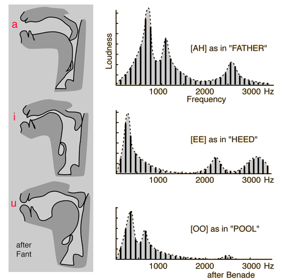

State of Art
March 13, 2020
1.1. Speech Production


J. Frahm et C. Rotte: IRM German speech production
Speech is the result of combination of articulatory gestures and energy.
1.2. Source Filter theory

1.3. Formants
 
Strange (1989) proved that with only the first 2 formants, vowel identification can be achieve
2.0 Speech Recognition System

2.1 Static Speech Features
- Linear Predictive Coding (LPC): Based on a mathematical approximation of the vocal tract.
- Mel Frequency Cepstrum Coeficient (CFCC): Based on human hearing perceptions.

2.2 MFCC vs. Variability
- Enviromental variability: caused by noisy surroindings, microphone characteristics.
- Physiological variability: eg. female vs male vocal tract.
- Coarticulation: speech sound influeced by a preceding or a following speech sound.


Watt & Fabricius 2002: Comparison of FLEECE ~ TRAP ~ GOOSE for female and male speakers.
2.3 Dynamic of Consonant
- Tuller, Case, Ding & Kelso 1994: English “Stay-Say” continuum
- Nguyen, et al. 2005: French “Cepe-Steppe” continuum.

Praat recording to illustrate “Stay-Say” continuum.
2.4 Dynamic of Vowel
- Peterson and Barney 1952, & Hillebrand 1995: Formants frequencies over time.
- Strange 1989: Perception of silent-center syllables .
- R. Carré & Mrayatri 1991: natural vocalic trajectories follow specific paths .

R.Carré et Mrayatri 1991. Vocalic trajectories (a-V2) in the F1-F2 plane
3.1 SSCF
- K.K. Paliwal 1998: proposed spectral subband controids as a new features and use them as supplement to cepstral features for SR.
- N. Poh et al 2003: suggest that SSCs are more robust to additive noise.

Kua et al. 2010: SSCF representation.
N. Poh et al 2003: Conventional spectrogram overlaid witth SSCF.
3.2 Modeling Dynamic features
- Tran 2006: Confirms that SSCF parameters can replace formants frequencies and act as pseudo-formants.

Tran 2006. Comparison between SSCF features and formant frequencies on natural Vietnamese signal.
3.2 Modeling Dynamic features
- Tran 2006: Proposed a new method to model acoustic and dynamic features (SSCF).
- Phuong 2018: Proposed an improvement in SSCF angles calculation

R.Carré et al. 2004. Vocalic trajectories in the F1-F2 plane
3.2 Modeling Dynamic features
Results showed that SSCF angles have similar values for both male and female speakers.


3.2 Modeling Dynamic features
Results showed that:
- in both languages the SSCF angle12 was more or less the same.
- different values for SSCF angle23 and SSCF angle34